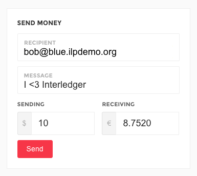
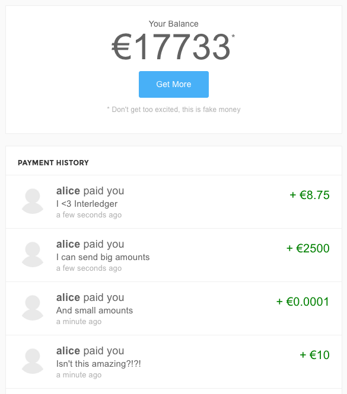

    <!-- docs getting started section -->

    <div class="container docs-wrapper">
      <div class="row">
         <div class="col-sm-4 sidebar">
           <div id="sidebarContent"></div>
        </div>
        <div class="col-sm-8 wrapper">
          <h1 class="page-header">Getting Started</h1>

          <h2>Sending Your First Interledger Payment</h2>

          <p class="intro">Sign up for the demo wallets and start sending Interledger payments between them in under 3 minutes.</p>

          <p>First, create an account on the <a target="_blank"href="https://red.ilpdemo.org">Red Demo Wallet</a> and the <a target="_blank"href="https://blue.ilpdemo.org">Blue Demo Wallet</a> (one for sending and the other for receiving).</p>

          <div>
          
          </div>

          <p>Now you can send payments between your accounts.</p>

          <div>
          
          </div>

          <p>And they arrive instantly, even though they are on different ledgers.</p>

          <div>
          
          </div>

          <p>Congratulations, you've sent your first Interledger payment!</p>

          <h2>Next Steps</h2>

          <p>Want to start coding with payments? Use the accounts you just created to programmatically send and receive payments with the <a target="_blank" href="https://github.com/interledger/five-bells-wallet-client">Wallet Client</a>.</p>

      </div>

    </div> <!-- /container -->